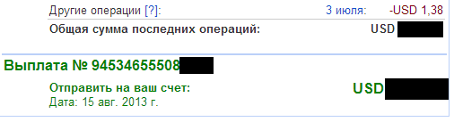
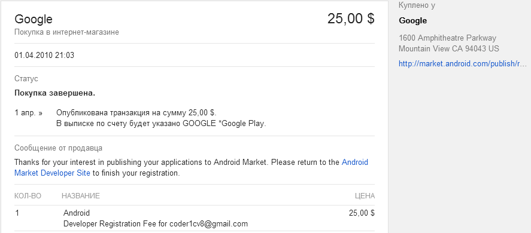

Google Play — работаем легально!
Сегодня, я хочу рассказать о том как сделать свое хобби по разработке Android-приложений пусть небольшим, но официальным бизнесом. О том, как легально получать деньги, заработанные на Google Play, о «страшном» валютном контроле и «таинственном» паспорте сделки.
ИП и расчетный счет
Итак, прежде всего, нам нужно зарегистрировать ИП (по УСН 6%). Об этом написано очень много, поэтому подробно останавливаться не будем. Я пошел самым простым путем: воспользовался одним из сервисов онлайн-бухгалтерии (ссылку могу дать в личке). Этот сервис формирует пакет документов, дает детальные инструкции, печатает счета и напоминает когда нужно в налоговую какую-нибудь бумажку отправить, в общем, удобно.
После регистрации ИП, надо принять решение, в каком банке открывать расчетный счет. От этого многое зависит, с валютным контролем именно этого банка нам придется в дальнейшем, иметь дело. Так же, стоимость обслуживания может значительно отличаться. Я выбрал Сбербанк (да-да, я знаю о его глюках и неразберихе). Впрочем, есть и положительные стороны: очень доброжелательный валютный контроль, подробно отвечают на все вопросы и всегда помогают в любых спорных моментах (не стесняйтесь позвонить и пообщаться). При открытии счета, «в нагрузку» идет веб-клиент для управления всем этим делом. Когда приходишь в себя после шока от его интерфейса, понимаешь, что электронный документооборот — это все-таки круто! Никаких походов в банк, все необходимые документы/операции оформляются через интернет, со временем, учишься это делать, практически, на автомате.
Получение денег
Рассмотрим получение денег от продаж (Google Checkout) и рекламы (Google AdMob). Прежде всего, в платежных настройках аккаунта, указываем валютный транзитный счет нашего ИП. После поступления платежа, нам необходимо эту валюту продать в течение 15 дней (на свой рублевый счет), а также оформить «справку о валютных операциях». Строго говоря, есть возможность валюту и не продавать, но мы пойдем по пути наименьшего сопротивления. Происходит это, следующим образом:
1. Ждем поступления платежа. Это Сбербанк, поэтому ни на какие оповещения рассчитывать не приходится, просто заходим 15-18 числа каждого месяца в «Sberbank Business Online» и мониторим операции по счету.
2. Когда деньги пришли, создаем «Справку о валютных операциях по 138-И». В справке нужно указать «номер документа по валютной операции» (как я понимаю, это входящее ПП или что-то в этом роде). Вообще, банк обязан прислать уведомление с номером, датой и суммой, но обычно, просто звонит сотрудник (ну или звоним сами, в то отделение, где открыт счет). Также, нам понадобится подтверждающий документ — это договор публичной оферты, который мы принимаем, регистрируя аккаунт (идем на страницу Положений и условий, выбираем русский язык и сохраняем в doc или pdf). Это для доходов от рекламы. Для Google Checkout условия не переведены, поэтому переводим сами. Кроме этого, ВК Сбербанка требует к справке о валютных операциях прилагать какой-нибудь скриншот/документ, где фигурировала бы сумма операции. Например, такой:

3. Если мы не хотим сразу оформлять паспорт сделки, то пишем в банк письмо следующего содержания (один раз, здесь же в «Sberbank Business Online»): Сумма по договору публичной оферты б/н от [дата регистрации аккаунта] между Google Ireland Limited и ИП [ФИО] не превышает 50 000 USD (пятьдесят тысяч долларов США).
4. Далее, создается «Распоряжение об осуществлении обязательной продажи» где и указывается справка о валютных операциях, созданная на шаге 2.
5. После того как деньги поступят на рублевый расчетный счет ИП, создаем платежное поручение и делаем перевод на свой карточный счет. Все, PROFIT!, как говорится.
Паспорт сделки
Если общая сумма взаиморасчетов с контрагентом достигает 50 000 долларов, необходимо оформить паспорт сделки. Здесь мы используем тот же договор публичной оферты, единственный нюанс: нам понадобятся даты начала и окончания обязательств по контракту. Начало — это дата регистрации аккаунта разработчика. В качестве ее подтверждения, подойдет квитанция об оплате регистрационного взноса на Play Store (квитанцию можно найти в истории покупок).

Касательно даты окончания, прибавляем к дате начала лет 10-15 (так чтобы не возвращаться к этому вопросу в ближайшем времени) и пишем письмо в банк: Прошу считать датой окончания обязательств по контракту б/н от [дата регистрации аккаунта], дату: [ваша дата]. Указанная дата рассчитана в соответствии с обычаями делового оборота.
Когда ВК банка принимает паспорт сделки, ему присваивается номер, который мы и будем использовать при проведении справок по валютным операциям. Если ранее, по этому контрагенту, были справки без заключения контракта, их необходимо повторно отправить в банк (с признаком корректировки), указав номер паспорта сделки.
Заключение
Как видите, все не так уж сложно. Выгода от официального оформления в качестве ИП, я думаю, очевидна. Если говорить об альтернативах, то самый простой вариант — это платить 13% НДФЛ. Никаких бумаг, паспорт сделки для физ. лиц не требуется. В том же Сбербанке, валютный контроль вообще не работает по частным лицам. Конечно, в теории, вы попадаете под «незаконное предпринимательство», но если исправно платить налоги, то такой вариант тоже вполне приемлем.
На этом, вроде бы, все. Если остались какие-то не раскрытые вопросы — прошу в комментарии. Всем вдохновения, роста и новых идей!